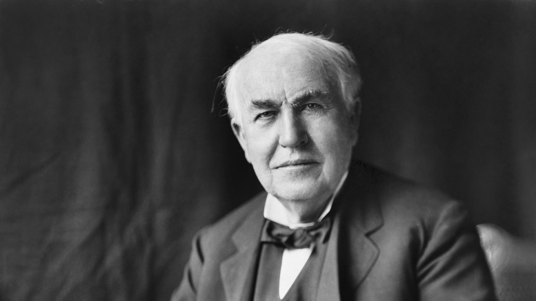

Thomas Alva Edison
Born: February 11, 1847 (Milan, Ohio) | Died: October 18, 1931 (West Orange, NJ)

Achievements:
Invention of the Phonograph (1877): This was the first device to both record and reproduce sound, revolutionizing the music industry.
Electric Light Bulb (1879): Although he didn’t invent the light bulb, Edison improved its design and developed a practical, long-lasting version, leading to widespread electric lighting.

Impact on History:
Business Practices: Edison’s approach to invention and commercialization influenced entrepreneurship and the patent system. He held over 1,000 patents and was a pioneer in creating business models around intellectual property. Laboratory Innovation (Edison's establishment of the first industrial research laboratory at Menlo Park set a precedent for modern R&D practices. His collaborative approach to invention inspired future innovations across various fields.)